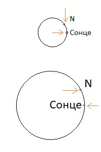

Всі зірки і у випадку деяка зірка `N`, відаляються від Сонця зі швидкостями, пропорційними їх відстані до нього. Як буде виглядати ця картина з "точки зору" зірки `N`?
Дано:
Розв`язання
`l = 2\piR` При збільшені `R` лінійно збільшується `l`. Отже відповідь аналогічно.
